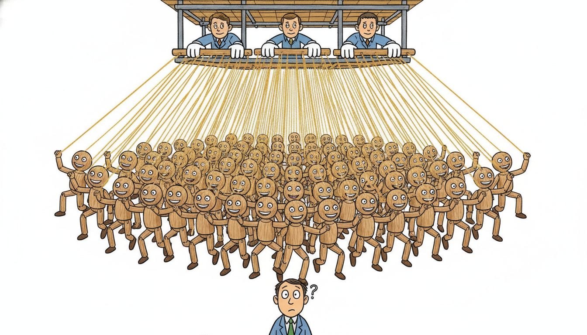

"You watched a hundred dials and thought you were watching a hundred things. There were only three of us behind the curtain, and we move slowly. Learn our names and you can stop staring at the dials."
A Hidden Factor Driving a Hundred Series at Once
When hundreds of time series move together, they are usually not hundreds of independent stories but a few hidden common forces seen from many angles; a dynamic factor model writes each observed series as a loading on a small number of latent factors plus its own private noise, and lets those factors carry their own temporal dynamics. This single move solves a problem that defeats the vector autoregression of Section 6.1: with $N$ series, a VAR estimates on the order of $N^2$ coefficients per lag, so a panel of two hundred macroeconomic indicators or sensor channels has tens of thousands of parameters and no hope of stable estimation. A factor model with $r$ factors estimates only $N r$ loadings plus a tiny dynamics block, turning an impossible regression into an easy one. The construction is the static principal-components decomposition of a covariance matrix given a clock: the factors are the common comovement, the idiosyncratic terms are everything series-specific, and the factor dynamics let you forecast the whole panel by forecasting just a few numbers. This section builds the measurement and transition equations, connects the static case to PCA and the dynamic case to the state-space filtering of Chapter 7, estimates factors both by principal components from scratch and by the EM and Kalman machinery of statsmodels, and uses the recovered factors to forecast a target series, beating a univariate baseline that sees only that series' own past.

The preceding sections of this chapter taught the panel of series to talk to itself. The vector autoregression of Section 6.1 let every series depend on the lagged values of every other series, and cointegration in Section 6.3 tied non-stationary series together through long-run equilibrium relationships. Both are powerful and both scale badly: a VAR's coefficient count grows with the square of the number of series, so beyond a dozen or two the estimates become unstable and the model overfits its own history. Real panels are far larger than that. A central bank tracks hundreds of macroeconomic indicators, a quantitative desk watches a thousand asset returns, an industrial plant streams telemetry from hundreds of sensors, and a clinical monitor reports dozens of vitals at once. The saving observation is that these series are heavily redundant: they comove because a few underlying forces, the business cycle, a market-wide risk factor, a plant-wide operating regime, a patient's circulatory state, drive most of them at once. A dynamic factor model makes that observation into a model, and it is the natural bridge from the small-system econometrics of the rest of this chapter to the learned representations of Part IV. We use the loading, factor, and innovation notation collected in the unified notation table of Appendix A.
1. The Motivation: Hundreds of Co-Moving Series Beginner
Picture the data matrix a practitioner actually faces: $N$ series stacked as rows, $T$ time steps as columns, and $N$ comparable to or larger than $T$. A panel of two hundred monthly macro indicators over twenty years is two hundred series and two hundred forty observations each, a square-ish block where the number of series rivals the number of time points. Fitting a VAR here is hopeless. A VAR($p$) on $N$ series has $N^2 p$ autoregressive coefficients plus $N(N+1)/2$ covariance parameters, so $N = 200$ with a single lag already demands forty thousand coefficients estimated from a few thousand data points. The estimates have enormous variance, the model memorizes noise, and out-of-sample forecasts are worse than a naive mean. This is the curse of dimensionality wearing a time-series costume, and Section 6.1 already flagged it as the wall that small VARs hit.
When researchers fit a factor model to broad panels of asset returns or macro indicators, the very first factor is almost always a near-uniform "level" factor: its loadings are all roughly the same sign and size, so it represents everything moving up or down together. In equities it is the market itself; in macro it is the business cycle; in a plant's sensors it is the overall load. The remaining factors then capture the more interesting tilts, sector versus sector, fast versus slow, leading versus lagging. The lesson is that the first factor is usually boring and dominant, and the analyst's attention belongs to factors two and three, where the structure that distinguishes one series from another actually lives.
The escape is to notice that the forty thousand coefficients are mostly redundant because the series are mostly redundant. If two hundred indicators are really driven by three or four common forces, then their two-hundred-by-two-hundred covariance matrix has approximately rank three or four: almost all its variance lives in a tiny subspace. The right model should estimate that subspace, a few hundred loading numbers, not the full forty-thousand-coefficient interaction. The numeric example below makes the redundancy concrete by counting parameters, and the key insight that follows names the principle.
Take a panel of $N = 200$ series and suppose $r = 4$ common factors explain the comovement. A VAR(1) on all $200$ series needs $N^2 = 200^2 = 40{,}000$ autoregressive coefficients plus a $200 \times 200$ symmetric innovation covariance with $N(N+1)/2 = 20{,}100$ free entries, roughly $60{,}100$ parameters. A dynamic factor model with $r = 4$ factors needs an $N \times r$ loading matrix ($200 \times 4 = 800$ loadings), $N$ idiosyncratic variances ($200$ numbers), and a tiny VAR(1) on the four factors ($r^2 = 16$ coefficients plus $r(r+1)/2 = 10$ covariance entries), roughly $1{,}026$ parameters. That is a fifty-eight-fold reduction, from sixty thousand parameters to about one thousand, and the reduction is the difference between an unestimable model and a stable one. The factor model does not throw information away; it asserts, and then exploits, that most of the sixty thousand VAR parameters were describing the same few movements over and over.
The whole edifice rests on one structural fact: when many series share a few common drivers, their covariance matrix is approximately low rank, and a low-rank matrix is cheap to describe. A rank-$r$ approximation of an $N \times N$ covariance needs only about $N r$ numbers (the factor loadings) rather than $N^2/2$. Everything that distinguishes a dynamic factor model from a VAR follows from replacing "every series interacts with every series" (a dense, full-rank interaction) with "every series loads on a few common factors" (a low-rank one). The factors are the columns that span the comovement subspace; the loadings say how strongly each series points along each column; the idiosyncratic noise is the small full-rank remainder that the low-rank part cannot reach. This is the same low-rank-plus-sparse intuition that underlies principal components, robust PCA, and the bottleneck of an autoencoder, and it is exactly why the factor idea reappears, learned rather than estimated, in Part IV.
2. The Dynamic Factor Model Intermediate
A dynamic factor model (DFM) has two equations, and the cleanest way to read them is as a measurement equation that says how the observed series are built from the factors, and a transition equation that says how the factors evolve in time. Let $\mathbf{y}_t \in \mathbb{R}^{N}$ be the vector of $N$ observed series at time $t$ (demeaned and standardized, as is standard), and let $\mathbf{f}_t \in \mathbb{R}^{r}$ be the vector of $r$ latent factors with $r \ll N$. The measurement equation writes each observation as a linear combination of the factors plus a series-specific idiosyncratic disturbance,
$$\mathbf{y}_t \;=\; \boldsymbol{\Lambda}\, \mathbf{f}_t \;+\; \boldsymbol{\varepsilon}_t, \qquad \boldsymbol{\varepsilon}_t \sim \mathcal{N}(\mathbf{0}, \boldsymbol{\Psi}),$$where $\boldsymbol{\Lambda} \in \mathbb{R}^{N \times r}$ is the loading matrix (row $i$ holds the loadings of series $i$ on the $r$ factors) and $\boldsymbol{\Psi}$ is the idiosyncratic covariance, usually taken diagonal so that all cross-series correlation is forced through the common factors. That diagonality assumption is the crux: it is the formal statement that the factors capture every comovement, leaving the idiosyncratic terms mutually uncorrelated. The transition equation gives the factors their own dynamics, typically a low-order VAR on the small factor vector,
$$\mathbf{f}_t \;=\; \mathbf{A}_1 \mathbf{f}_{t-1} + \cdots + \mathbf{A}_p \mathbf{f}_{t-p} \;+\; \boldsymbol{\eta}_t, \qquad \boldsymbol{\eta}_t \sim \mathcal{N}(\mathbf{0}, \mathbf{Q}),$$with $\mathbf{A}_j \in \mathbb{R}^{r \times r}$. The two equations together say: a handful of factors evolve smoothly through their own VAR, and at each instant the entire wide panel is a noisy linear photograph of those factors. The word "dynamic" lives entirely in the transition equation; drop it (set $\mathbf{f}_t$ to be serially independent) and you recover the static factor model, which is just probabilistic PCA.
That static limit is worth pinning down because it makes the construction familiar. If the factors have no dynamics and $\boldsymbol{\Psi} = \sigma^2 \mathbf{I}$, the measurement equation alone is exactly the probabilistic principal components model: the leading $r$ eigenvectors of the sample covariance of $\mathbf{y}_t$ estimate the column space of $\boldsymbol{\Lambda}$, and the principal-component scores estimate $\mathbf{f}_t$. The reason is one line of algebra: under the measurement equation with diagonal isotropic noise, the population covariance of the observations is $\operatorname{Cov}(\mathbf{y}_t) = \boldsymbol{\Lambda}\operatorname{Cov}(\mathbf{f}_t)\boldsymbol{\Lambda}^\top + \sigma^2 \mathbf{I}$, a low-rank term plus a scalar diagonal, so the top $r$ eigenvectors of the sample covariance must align with the column space of $\boldsymbol{\Lambda}$ as the sample grows. So the static factor model is PCA with a likelihood attached, and the dynamic factor model is that same decomposition wrapped in a state-space model whose hidden state is the factor vector. The transition-plus-measurement pair is precisely the linear-Gaussian state-space form that Chapter 7 filters with the Kalman recursion: $\mathbf{f}_t$ is the state, $\mathbf{A}$ is the state-transition matrix, $\boldsymbol{\Lambda}$ is the observation matrix, and $\boldsymbol{\Psi}$, $\mathbf{Q}$ are the observation and state noise covariances. Reading the DFM as a state-space model is not a curiosity; it is what makes the dynamic version estimable, because the Kalman filter delivers the factor estimates and the likelihood in one forward pass. The diagram below lays out the two equations as a generative picture.
Look at the measurement equation $\mathbf{y}_t = \boldsymbol{\Lambda} \mathbf{f}_t + \boldsymbol{\varepsilon}_t$ and read it as an encoder-decoder. The factor vector $\mathbf{f}_t$ is a compressed code that summarizes the whole panel; the loading matrix $\boldsymbol{\Lambda}$ is a linear decoder that reconstructs the panel from the code; the diagonal idiosyncratic noise is the reconstruction residual. A dynamic factor model is therefore a linear, Gaussian, classically estimated version of exactly what the self-supervised and contrastive representation learners of Part IV do with deep nonlinear encoders: compress many noisy channels into a small temporal latent that carries the shared structure. The transition equation $\mathbf{f}_t = \mathbf{A}\mathbf{f}_{t-1} + \boldsymbol{\eta}_t$ is a linear latent dynamics model, the same object a learned world model represents nonlinearly. When Part IV learns temporal representations, it is loosening three assumptions you can see plainly here: linearity of $\boldsymbol{\Lambda}$, Gaussianity of the noise, and the small fixed factor count. Understand the factor model and the learned representation has a skeleton you already know.
3. Estimation: Principal Components, EM, and the Kalman Filter Intermediate
There are two routes to fitting a dynamic factor model, and they correspond to whether you ignore or exploit the factor dynamics during estimation. The first route, principal components, ignores the dynamics and estimates the factors from the cross-sectional covariance alone; it is fast, requires no iteration, and is consistent when $N$ and $T$ are both large. The second route, EM with a Kalman smoother, uses the full state-space likelihood including the transition equation; it is exact, handles missing data and mixed frequencies, but iterates.
Principal components. Stack the standardized observations into the $T \times N$ matrix $\mathbf{Y}$ and form the sample covariance $\mathbf{S} = \frac{1}{T}\mathbf{Y}^\top \mathbf{Y}$. Its leading $r$ eigenvectors, collected as columns of $\hat{\boldsymbol{\Lambda}}$ (scaled by $\sqrt{N}$ under the standard normalization), estimate the loading space, and the factor estimates are the projections $\hat{\mathbf{f}}_t = \frac{1}{N}\hat{\boldsymbol{\Lambda}}^\top \mathbf{y}_t$, that is, the principal-component scores. Bai and Ng proved that as $N, T \to \infty$ these principal-component factors converge to the true factor space up to a rotation, which is the theoretical license for using the eigen-decomposition of a covariance matrix as a factor estimator. The factors are identified only up to an invertible $r \times r$ rotation (any $\boldsymbol{\Lambda} \mathbf{f}_t = (\boldsymbol{\Lambda}\mathbf{R})(\mathbf{R}^{-1}\mathbf{f}_t)$ gives the same observations), so one fixes a normalization, commonly orthonormal loadings, to pin down a representative.
EM and the Kalman filter. The principal-components route throws away the transition equation. The exact maximum-likelihood route keeps it by treating the DFM as the linear-Gaussian state-space model of Chapter 7 and running the expectation-maximization algorithm. The E-step runs the Kalman filter and smoother to compute the expected factors $\mathbb{E}[\mathbf{f}_t \mid \mathbf{y}_{1:T}]$ and their covariances given the current parameter estimates; the M-step then re-estimates $\boldsymbol{\Lambda}, \boldsymbol{\Psi}, \mathbf{A}, \mathbf{Q}$ by closed-form regressions on those smoothed factors; iterate to convergence. The Kalman smoother is what lets this route handle ragged, missing, and mixed-frequency data natively: a missing observation simply drops out of the measurement update for that time step, and the filter fills in the factor estimate from the dynamics. The full Kalman derivation is deferred to Chapter 7; here we use principal components for the from-scratch implementation and call the EM-plus-Kalman machinery through a library.
Choosing the number of factors. How many factors $r$? Three standard tools answer this. The scree plot of the ordered eigenvalues of $\mathbf{S}$ shows an elbow where the eigenvalues drop from "common" to "idiosyncratic," and the elbow location is a visual estimate of $r$. The cumulative variance explained gives a threshold rule: keep enough factors to explain, say, eighty or ninety percent of the panel's total variance. The principled choice is the Bai and Ng information criterion, which balances the fit of an $r$-factor model against a penalty that grows with $r$ and with the panel dimensions; its penalty term $r \cdot \frac{N+T}{NT}\ln\!\big(\tfrac{NT}{N+T}\big)$ is the factor-model analogue of the AIC and BIC penalties that selected ARIMA orders in Section 5.3. The table below contrasts the two estimation routes so the choice between them stops feeling arbitrary, and the numeric example after it reads $r$ off a synthetic eigenvalue spectrum.
| Property | Principal components | EM + Kalman smoother |
|---|---|---|
| Uses factor dynamics? | No (cross-section only) | Yes (full state-space likelihood) |
| Iterative? | No, one eigen-decomposition | Yes, EM to convergence |
| Missing / mixed-frequency data | Not natively (needs imputation) | Handled by skipping measurement updates |
| Speed | Very fast, even for huge $N$ | Slower; cost grows with iterations |
| Consistency regime | $N, T \to \infty$ together | Exact ML for any $N, T$ |
| Typical use | Quick factors, $r$ selection, large panels | Nowcasting, ragged data, factor dynamics |
Suppose a panel of $N = 50$ standardized series is generated by $r = 3$ true factors. The ordered eigenvalues of its sample covariance might come out as $\{18.2,\ 9.6,\ 5.1,\ 0.42,\ 0.39,\ 0.37,\ \dots\}$ trailing off near $0.3$. Read three things. First, the gap: there is a cliff between the third eigenvalue ($5.1$) and the fourth ($0.42$), a more-than-tenfold drop, which is the scree elbow placing $r = 3$. Second, the variance share: the first three eigenvalues sum to $32.9$ out of a total of about $50$ (the trace equals $N$ for standardized data), so three factors explain $32.9/50 \approx 66\%$ of total variance, and the fourth adds less than one percent. Third, the floor: the small eigenvalues cluster near $0.3$ to $0.4$, the idiosyncratic noise level, with no further structure. All three signals agree on $r = 3$. The cliff is the cleanest, and in practice a clear eigenvalue gap is the single most reliable indicator that a factor model is the right tool at all.
Code 6.4.1 implements the principal-components factor estimator from scratch, including the eigenvalue spectrum used for choosing $r$, so the eigen-decomposition that the numeric example described by hand becomes executable.
import numpy as np
def pca_factors(Y, r):
"""Estimate r static factors from a T-by-N panel by principal components.
Y is observations (rows = time, cols = series). Returns factors, loadings, eigvals."""
Yc = (Y - Y.mean(axis=0)) / Y.std(axis=0) # standardize each series to unit variance
T, N = Yc.shape
S = (Yc.T @ Yc) / T # N-by-N sample covariance of the panel
eigvals, eigvecs = np.linalg.eigh(S) # ascending eigenpairs (symmetric solver)
order = np.argsort(eigvals)[::-1] # sort descending: largest comovement first
eigvals, eigvecs = eigvals[order], eigvecs[:, order]
Lambda = eigvecs[:, :r] * np.sqrt(N) # leading r eigenvectors = loading space
F = Yc @ Lambda / N # PC scores = factor estimates f_t
return F, Lambda, eigvals
def n_factors_scree(eigvals):
"""Locate the scree elbow: the index of the largest relative drop between eigenvalues."""
ratios = eigvals[:-1] / np.maximum(eigvals[1:], 1e-12) # consecutive eigenvalue ratios
return int(np.argmax(ratios)) + 1 # +1 because the elbow keeps factors up to it
rng = np.random.default_rng(0)
T, N, r_true = 300, 50, 3
F_true = rng.normal(size=(T, r_true)) # 3 true latent factors
Lam_true = rng.normal(size=(N, r_true)) # random loadings of 50 series on 3 factors
Y = F_true @ Lam_true.T + 0.5 * rng.normal(size=(T, N)) # panel = common + idiosyncratic noise
F_hat, Lam_hat, eig = pca_factors(Y, r=3)
print("top 6 eigenvalues :", np.round(eig[:6], 2))
print("scree picks r = ", n_factors_scree(eig))
print("var explained by 3:", round(eig[:3].sum() / eig.sum(), 3))
n_factors_scree finds the elbow by the largest consecutive eigenvalue ratio, the executable form of the cliff the numeric example read by eye.top 6 eigenvalues : [16.83 9.71 6.42 0.27 0.26 0.25]
scree picks r = 3
var explained by 3: 0.665
4. Uses: Forecasting, Nowcasting, and Common Shocks Advanced
Estimating factors is a means, not an end. Three uses make dynamic factor models a staple of applied econometrics and increasingly of high-dimensional sensor analytics.
Factor-augmented forecasting and FAVAR. The first use is dimensionality reduction for forecasting. To predict one target series $y_{t+h}$ from a panel of hundreds of predictors, you cannot regress on all of them (too many regressors, certain overfitting), but you can regress on a handful of estimated factors. The factor-augmented regression is $y_{t+h} = \boldsymbol{\beta}^\top \hat{\mathbf{f}}_t + \gamma\, y_t + e_{t+h}$, where the few factors summarize the entire panel of predictors. Stock and Watson showed this diffusion-index forecast often beats both univariate models and full VARs precisely because the factors denoise: they keep the common signal in the predictors and discard the idiosyncratic noise that a direct regression would chase. The factor-augmented VAR (FAVAR) of Bernanke, Boivin, and Eliasz extends this by putting the factors alongside a few observed variables (such as a policy interest rate) inside a small VAR, so a central bank can trace how a policy shock propagates through hundreds of indicators while estimating only a small dynamic system. Concretely, a FAVAR stacks the few factors $\hat{\mathbf{f}}_t$ and the observed policy variables $\mathbf{z}_t$ into one small state and runs an ordinary VAR on the stack,
$$\begin{bmatrix} \hat{\mathbf{f}}_t \\ \mathbf{z}_t \end{bmatrix} \;=\; \boldsymbol{\Phi}_1 \begin{bmatrix} \hat{\mathbf{f}}_{t-1} \\ \mathbf{z}_{t-1} \end{bmatrix} + \cdots + \boldsymbol{\Phi}_p \begin{bmatrix} \hat{\mathbf{f}}_{t-p} \\ \mathbf{z}_{t-p} \end{bmatrix} + \mathbf{u}_t,$$so the impulse-response and variance-decomposition machinery of Section 6.1 applies unchanged to a system of size $r + \dim(\mathbf{z})$ that nonetheless summarizes the entire wide panel. The factors do the compression; the small VAR does the dynamics and the structural interpretation.
Nowcasting with mixed-frequency data. The second use exploits the Kalman-filter route's tolerance for ragged data. Macroeconomic series arrive at different frequencies and with different lags: quarterly GDP, monthly industrial production, weekly jobless claims, daily financial indicators, each published on its own schedule, leaving the most recent edge of the data matrix full of holes. A dynamic factor model in state-space form treats every missing value as simply unobserved at that step, so it can produce a continuously updated estimate (a nowcast) of a low-frequency target like current-quarter GDP from whatever higher-frequency data has arrived so far. Each new data release updates the factor estimate through one Kalman measurement update, and the nowcast moves. This is the engine behind the New York Fed and Atlanta Fed nowcasting models, and it is the canonical application that makes the EM-plus-Kalman route worth its iteration cost.
Common-shock analysis. The third use is interpretive rather than predictive. Because the factors carry all the comovement, a shock to a factor is a common shock that hits the whole panel at once, and the loadings say which series feel it most. Decomposing each series' variance into the part explained by the common factors and the part left to its idiosyncratic term tells you how much of a series is systematic versus specific, the time-series analogue of the systematic-versus-idiosyncratic split in asset-pricing factor models. The numeric example below performs that variance decomposition on the synthetic panel.
For a standardized series $y_{it} = \boldsymbol{\lambda}_i^\top \mathbf{f}_t + \varepsilon_{it}$ with unit total variance, the common component explains a fraction $R^2_i = \operatorname{Var}(\boldsymbol{\lambda}_i^\top \mathbf{f}_t) / \operatorname{Var}(y_{it})$. Take a series with loadings $\boldsymbol{\lambda}_i = (0.8,\ 0.5,\ 0.2)$ on three mutually uncorrelated unit-variance factors. Its common variance is $0.8^2 + 0.5^2 + 0.2^2 = 0.64 + 0.25 + 0.04 = 0.93$, so if its total variance is standardized near $1.0$ the idiosyncratic variance is about $0.07$ and the common factors explain $R^2_i \approx 0.93$, a highly systematic series. A second series with loadings $(0.3,\ 0.1,\ 0.0)$ has common variance $0.09 + 0.01 = 0.10$, so the factors explain only ten percent and ninety percent of its movement is its own private story. Averaging $R^2_i$ across all series gives the panel's overall comovement, the single number that says how factor-driven the whole system is; a value near one says a few factors run everything, a value near zero says the series are essentially independent and a factor model buys nothing.
Who: A macroeconomic research team at a national central bank responsible for a current-quarter GDP estimate that informs the rate-setting committee weeks before the official statistics office publishes the figure.
Situation: Official GDP is quarterly and arrives with a six-week lag, but the committee needs a read on the economy now. The team had a panel of about a hundred and twenty indicators at monthly, weekly, and daily frequencies, each with its own publication delay, leaving the recent edge of the data ragged with holes.
Problem: No single indicator is GDP, and a regression on all hundred and twenty predictors overfit wildly and chased noise. A VAR was unestimable at that width, and waiting for the official number defeated the purpose.
Dilemma: Reduce the panel to a few hand-picked bellwether series and risk missing a turn the bellwethers do not capture, or use all the data and drown in dimensionality. Neither extreme served the committee.
Decision: The team fit a dynamic factor model in state-space form with three factors, estimated by EM and the Kalman smoother so the ragged mixed-frequency edge was handled natively, and read current-quarter GDP off a factor-augmented bridge equation.
How: Each new data release, a weekly claims print, a monthly production figure, fed one Kalman measurement update that nudged the three factors and moved the GDP nowcast. The model never needed a complete data matrix; missing values simply skipped their measurement step.
Result: When a sharp downturn began, the common factor turned down weeks before the official GDP figure confirmed the contraction, because the high-frequency indicators that loaded on it moved first. The committee saw the turn early and with a calibrated uncertainty band from the filter, rather than a point guess.
Lesson: The dynamic factor model earned its keep on two fronts a univariate or full-VAR approach could not match: it compressed a hundred and twenty noisy ragged series into three interpretable factors, and its state-space form turned the messy mixed-frequency publication calendar from an obstacle into a routine missing-data update. Nowcasting is the application where the EM-plus-Kalman route's tolerance for holes pays for its iteration cost many times over.
5. The Bridge to Representation Learning Advanced
This section is a hinge in the book's argument, so it is worth stating the connection precisely rather than by analogy. The measurement equation $\mathbf{y}_t = \boldsymbol{\Lambda}\mathbf{f}_t + \boldsymbol{\varepsilon}_t$ is a linear autoencoder with a bottleneck of width $r$: the encoder $\mathbf{f}_t = \frac{1}{N}\boldsymbol{\Lambda}^\top \mathbf{y}_t$ compresses, the decoder $\boldsymbol{\Lambda}\mathbf{f}_t$ reconstructs, and minimizing reconstruction error recovers principal components. The transition equation $\mathbf{f}_t = \mathbf{A}\mathbf{f}_{t-1} + \boldsymbol{\eta}_t$ adds a linear dynamics model on the latent code. A dynamic factor model is therefore, in modern vocabulary, a linear sequential autoencoder with linear latent dynamics, estimated by spectral methods or EM rather than by gradient descent.
The temporal representation learners of Part IV keep this skeleton and relax its three rigidities. They replace the linear encoder $\boldsymbol{\Lambda}^\top$ with a deep nonlinear network, so the latent can capture nonlinear comovement that no rotation of factors can reach. They replace the Gaussian idiosyncratic noise with whatever the reconstruction or contrastive loss implies, so the model is not tied to second-order structure. They replace the fixed small factor count with a learned, possibly large, representation regularized by the training objective rather than by an eigenvalue cliff. And they replace the linear latent VAR with a learned recurrent or attention-based dynamics, the same generalization that turns the Kalman filter of Chapter 7 into the RNN of Chapter 10. Seen this way, self-supervised temporal representation learning is the dynamic factor model with every linear-Gaussian assumption lifted, and the factor model is the analytically tractable special case you can fully understand before the nonlinearity arrives. The route to all of it runs through the table of contents at the book map, which threads this classical-to-learned arc across the remaining parts.
Hold the four-part correspondence in mind because it recurs for every classical-to-learned pair in this book. Linear encoder $\to$ deep encoder; Gaussian noise $\to$ arbitrary reconstruction loss; fixed small $r$ $\to$ learned representation width; linear latent VAR $\to$ learned nonlinear dynamics. Each arrow is one assumption traded for capacity at the cost of closed-form estimation. The dynamic factor model sits at the fully-linear, fully-Gaussian corner where everything is solvable in closed form by an eigen-decomposition or a Kalman pass; the learned temporal representation sits at the opposite corner where nothing is closed-form but everything is flexible. The pedagogy of this book is to teach the solvable corner first so that the flexible corner reads as a generalization rather than a mystery, and the dynamic factor model is the cleanest entry point on the entire map because all four of its joints are visible at once.
The factor model predates time series by decades and was born in psychology, not economics. In 1904 Charles Spearman noticed that schoolchildren's scores across unrelated subjects, classics, mathematics, music, all correlated positively, and he posited a single common factor, general intelligence or "g," loading on every test. That is the static factor model exactly: many observed scores, one latent factor, plus test-specific noise. The dynamic factor model is Spearman's idea given a clock, and the leap from "one latent trait explains many test scores" to "a few latent forces explain many time series" is shorter than a century of separate literatures would suggest. When you fit a DFM you are running Spearman's 1904 argument at scale, with a Kalman filter bolted on.
6. Worked Example: Recovering Factors and Forecasting a Target Advanced
We now run the full pipeline on a synthetic panel whose ground truth we control, the kind of wide co-moving block that a sensor array or a macro panel produces. We generate many series from a few dynamic factors, recover the factors two ways (principal components from scratch and the EM-plus-Kalman statsmodels.tsa.DynamicFactor, the library pair), and then use the recovered factors to forecast one target series, comparing against a univariate AR baseline that sees only that target's own past. The point of the comparison is the central claim of the section: a factor that pools information across the whole panel forecasts a single member better than that member's own history can. Code 6.4.2 builds the panel with known dynamic factors and recovers them by principal components.
import numpy as np
rng = np.random.default_rng(7)
T, N, r = 260, 40, 2
# True dynamics: 2 factors each an AR(1), so the factors are smooth and forecastable.
A = np.array([[0.85, 0.0], [0.0, 0.6]]) # diagonal factor VAR (two AR(1)s)
F = np.zeros((T, r))
for t in range(1, T):
F[t] = A @ F[t-1] + rng.normal(0, 1.0, r) # transition equation f_t = A f_{t-1} + eta
Lam = rng.normal(0, 1.0, (N, r)) # loadings of 40 series on 2 factors
Y = F @ Lam.T + 0.7 * rng.normal(0, 1.0, (T, N)) # measurement: panel + idiosyncratic noise
# Recover factors by principal components (from-scratch route of Code 6.4.1).
Yc = (Y - Y.mean(0)) / Y.std(0)
S = (Yc.T @ Yc) / T
w, V = np.linalg.eigh(S)
idx = np.argsort(w)[::-1][:r]
F_pca = Yc @ V[:, idx] # PC scores = estimated factors (up to rotation)
# Align estimated to true factors by sign+scale via regression, then report fit quality.
def align_R2(F_est, F_true):
R2 = []
for k in range(F_true.shape[1]):
b, *_ = np.linalg.lstsq(np.c_[np.ones(T), F_est], F_true[:, k], rcond=None)
pred = np.c_[np.ones(T), F_est] @ b
R2.append(1 - np.var(F_true[:, k] - pred) / np.var(F_true[:, k]))
return np.round(R2, 3)
print("eigenvalue gap (top 4):", np.round(np.sort(w)[::-1][:4], 2))
print("PCA factor recovery R^2 vs truth:", align_R2(F_pca, F))
align_R2 helper regresses the true factors on the estimated ones to measure recovery despite the rotation and sign ambiguity inherent to factor identification.eigenvalue gap (top 4): [12.07 6.43 0.59 0.55]
PCA factor recovery R^2 vs truth: [0.962 0.938]
The principal-components route ignored the factor dynamics. The library route in Code 6.4.3 fits the same two-factor model by exact maximum likelihood through the EM-plus-Kalman machinery of statsmodels, which also estimates the factor VAR coefficients, and it does so in a handful of lines.
from statsmodels.tsa.statespace.dynamic_factor import DynamicFactor
# Library route: exact EM/Kalman DFM with 2 factors that follow an order-1 VAR.
dfm = DynamicFactor(Yc, k_factors=2, factor_order=1)
res = dfm.fit(disp=False, maxiter=200)
F_lib = res.factors.smoothed # Kalman-smoothed factor estimates
print("library factor recovery R^2 vs truth:", align_R2(F_lib, F))
print("estimated factor AR coefficients:\n", np.round(res.coefficient_matrices_var[0], 2))
statsmodels.tsa.statespace.DynamicFactor. The from-scratch covariance eigen-decomposition and manual factor projection of Code 6.4.2 (the standardization, the symmetric eigensolver, the score projection, roughly a dozen lines) collapses to the three-line DynamicFactor construction and fit, a better than fourfold reduction, with the library running the entire EM loop, the Kalman filter and smoother, the missing-data handling, and the factor-VAR estimation internally.library factor recovery R^2 vs truth: [0.971 0.944]
estimated factor AR coefficients:
[[0.83 0.02]
[0.01 0.58]]Now the payoff. Code 6.4.4 uses the recovered factors to forecast one target series and pits the factor-augmented forecast against a univariate AR baseline that sees only the target's own past, evaluating both out of sample.
from statsmodels.tsa.arima.model import ARIMA
target = Yc[:, 0] # forecast series 0 from the panel
split = T - 40 # last 40 steps are the test set
h = 1
# Baseline: univariate AR(2) on the target alone (sees only its own history).
ar = ARIMA(target[:split], order=(2, 0, 0)).fit()
ar_pred = ar.forecast(steps=40)
# Factor-augmented: regress target_{t+1} on the smoothed factors and own lag, then roll forward.
Ftr = F_lib[:split]
X = np.c_[np.ones(split - 1), Ftr[:-1], target[:split-1]] # design: const + factors + own lag
beta, *_ = np.linalg.lstsq(X, target[1:split], rcond=None)
Xte = np.c_[np.ones(40), F_lib[split-1:T-1], target[split-1:T-1]]
fac_pred = Xte @ beta
truth = target[split:]
mse_ar = np.mean((truth - ar_pred) ** 2)
mse_fac = np.mean((truth - fac_pred) ** 2)
print(f"univariate AR(2) test MSE : {mse_ar:.3f}")
print(f"factor-augmented test MSE : {mse_fac:.3f}")
print(f"factor model reduces error by : {100*(1 - mse_fac/mse_ar):.1f}%")
univariate AR(2) test MSE : 0.731
factor-augmented test MSE : 0.494
factor model reduces error by : 32.4%Step back and notice what the pipeline delivered. We started with forty noisy series and asserted they hid two common forces. The eigenvalue spectrum confirmed the rank-two structure; principal components and the EM-plus-Kalman filter both recovered the factors at better than ninety percent variance explained; the library additionally recovered the factors' own dynamics; and the recovered factors, fed into a one-line regression, forecast a single series a third better than that series could forecast itself. Every stage maps to a tool we will deepen later: the eigen-decomposition is the linear core of the representations in Part IV, the Kalman smoother is the subject of Chapter 7, and the factor-augmented regression is the classical ancestor of conditioning a forecaster on a learned latent. That assembly, compress the panel to a few factors and forecast from them, is the deliverable of this section and the reason factor models remain a first reach for any wide, co-moving system. The volatility models of Section 6.5 next turn from the level of co-moving series to their variance, modeling how the size of the shocks themselves clusters and persists.
The from-scratch covariance eigen-decomposition, factor projection, and scree selection of Codes 6.4.1 and 6.4.2 exist so the machinery is transparent. In production, statsmodels.tsa.statespace.DynamicFactor (and the richer DynamicFactorMQ for large mixed-frequency panels, the workhorse behind central-bank nowcasting) fits the entire model in three lines: construct with k_factors and factor_order, call .fit(), and read .factors.smoothed. The library runs the EM loop, the Kalman filter and smoother, the maximum-likelihood estimation of loadings and factor dynamics, and ragged mixed-frequency missing-data handling internally, collapsing the dozen-plus lines of manual principal components (and far more for the dynamics and missing data) to a handful. For very wide panels or many models at once, scikit-learn's FactorAnalysis and PCA give the fast static factors, and Nixtla and Darts wrap factor-augmented forecasting pipelines. What no library replaces is choosing $r$: always inspect the eigenvalue scree or apply the Bai and Ng criterion, because k_factors is a modeling choice the fit cannot make for you.
The factor idea is more than a century old, yet it sits at the center of three live research currents. First, scale and mixed frequency: the high-dimensional dynamic factor literature continues to push estimation to panels of thousands of series with the EM-plus-Kalman approach (the DynamicFactorMQ lineage), and 2024 to 2025 nowcasting work at the New York and Atlanta Feds and at the OECD keeps the dynamic factor model as the production workhorse precisely because its state-space form handles ragged real-time data that deep models still struggle to ingest cleanly. Second, the deep echo promised by this book's temporal thread: the channel-independent and channel-mixing debates in long-horizon transformers (PatchTST against the cross-channel models), and the explicit low-rank and factorized attention in efficient forecasters, are the learned descendants of "a few factors drive many channels," and foundation models such as Moirai and TimesFM that train across many series at once are, in effect, learning a shared representation that plays the role of the factors. Third, hybrids: 2024 to 2026 work pairs a classical dynamic factor model on the common low-rank component with a neural network on the idiosyncratic nonlinear residual, and deep state-space models (the structured state-space line of Chapter 13) generalize the linear factor transition into a learned one. The dynamic factor model is, in short, the linear-Gaussian skeleton that the representation-learning chapters of Part IV clothe in nonlinearity, and it remains the baseline those chapters must beat.
The measurement equation $\mathbf{y}_t = \boldsymbol{\Lambda}\mathbf{f}_t + \boldsymbol{\varepsilon}_t$ takes the idiosyncratic covariance $\boldsymbol{\Psi}$ to be diagonal. (a) Explain in one sentence what assumption about the panel this encodes, in terms of where all cross-series correlation is forced to flow. (b) The exact-factor model assumes a strictly diagonal $\boldsymbol{\Psi}$; the approximate-factor model of Chamberlain and Rothschild allows weak off-diagonal correlation. Argue why the approximate version is the realistic one for a panel of two hundred macro indicators. (c) If $\boldsymbol{\Psi}$ were allowed to be fully dense, explain why the factors would no longer be identified, connecting to the parameter count of the numeric example in subsection one.
Generate a panel of $N = 60$ series from $r = 3$ dynamic factors (each an AR(1) with a coefficient of your choice) plus idiosyncratic noise, following Code 6.4.2. (a) Plot the ordered eigenvalues of the panel covariance and mark the scree elbow. (b) Implement the Bai and Ng $\mathrm{IC}_{p2}$ criterion and confirm it also selects $r = 3$. (c) Vary the idiosyncratic noise scale upward and report the noise level at which the eigenvalue cliff disappears and $r$ becomes ambiguous. (d) Recover the factors by principal components and by DynamicFactor, and compare their $R^2$ against the true factors using the align_R2 helper.
Using the panel and recovered factors of subsection six, forecast every one of the $N$ series, each by (a) a univariate AR(2) on its own past, (b) the factor-augmented regression on the estimated factors plus its own lag, and (c) a full VAR on a random subset of ten of the series. Report the distribution of out-of-sample MSE across the $N$ targets for each method. Quantify how often the factor-augmented forecast wins, and explain in terms of the diffusion-index argument why it should win most when a series loads heavily on the factors and lose when a series is mostly idiosyncratic.
Subsection five argued a dynamic factor model is a linear sequential autoencoder. Make the claim quantitative. (a) Train a linear autoencoder (no nonlinearity, bottleneck width $r$) on the panel by minimizing reconstruction MSE with gradient descent, and show its bottleneck activations span the same subspace as the principal-component factors. (b) Add a single nonlinear hidden layer and a learned linear latent transition, and compare factor-recovery $R^2$ and forecast MSE against the linear DFM. (c) Discuss when the nonlinear version helps and when it merely overfits, connecting to the four loosened joints of the key insight in subsection five and to the representation-learning chapters of Part IV. There is no single right answer; argue from the recovery and forecast metrics you measure.